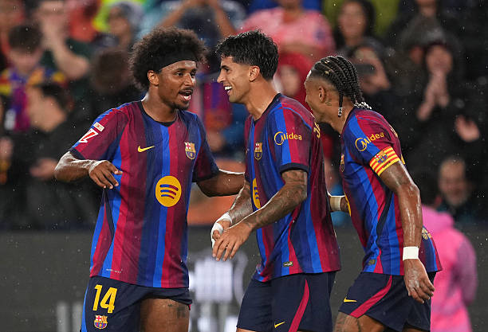
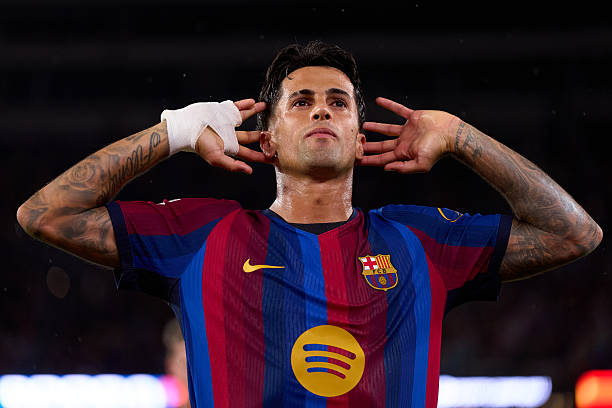
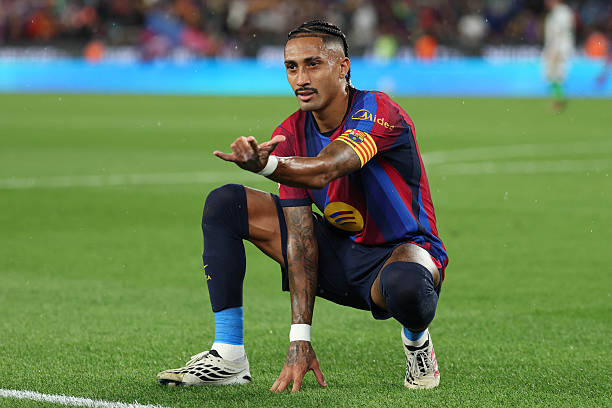
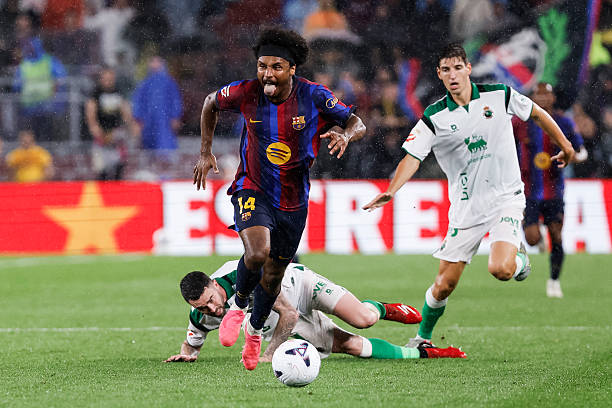

Lágrimas de Paco Gento tras la goleada del Barça

El miércoles 16 de septiembre se jugó el Barça - Racing con una goleada de escándalo de los culers, las lágrimas de Paco Gento en forma de lluvia no pararon el vendaval blaugrana ante los santanderinos.

Once del FC Barcelona: Joan Garcia; Eric, Christensen, Gerard Martín, Cancelo; Rodri, Pedri, Olmo; Lamine, Raphinha, Adeyemi.
Once del Racing de Santander: Agirrezabala; Hernando, Pedro, Facu, Aarón; Prati, Canales, Iñigo; Maguette, Villalibre, Arana.
Primera parte
Tras ver las dos alineaciones, estaba claro que el que iba a sufrir más en este partido era el Racing, once con muchas rotaciones frente al líder de la liga pensando más en el partido del Celta que en rascar puntos en el Camp Nou.
Y viendo que tras el pitido inicial el Racing iba a jugar a su manera ya se podía intuir que el Barça les iba a cascar ocho goles, vamos no hay que ser un lince para darse cuenta.
La goleada empezó rápida y de manera salvaje, Joao Cancelo con sus dos cojonazos gordos y peludos metió un trallazo insalvable para Julen Agirrezabala. Primer gol de los de Flick digno de Puskas.

Más tarde, en el minuto 21’, Pedro Felipe cometería el primer penalti y más que claro sobre Raphinha que fácilmente podría ser de roja, pero solo se amonestó con amarilla. El propio Raphinha sería el encargado de hacerlo y con un buen disparo batió al portero racinguista.
Cinco minutos más tarde el Barça nos regalaría una clase magistral sobre como no defender una contra, Maguette Gueye aprovechó los cromosomas de más de la zaga blaugrana y batió a la perfección a Joan García para acortar distancias.
En el minuto 36’, de nuevo Joao Cancelo con sus dos pedazos de cojones, disparó desde fuera del área y, aunque tocó en Asier Villalibre, no quita que sea otro golazo del lateral portugués, viendo esto uno pensaría que Balde iba a jugar lo mismo que Riqui Puig en la era Valverde, aunque más tarde veríamos que no.
En el minuto 41’, Adeyemi, Dani Olmo y Raphinha se inventan una jugada fenomenal para hacer el 3-1 y sentenciar a un Racing que poco podía que hacer más que mirar desde la cuckchair como le goleaban. Breve anotación para decir que el momento de forma de Raphinha es espectacular y que jugando de 9 es para pensar bien si de verdad es necesario traer a Julián Álvarez.

En el minuto 44’, Adeyemi forzó otro penalti gracias al burro de Pedro Felipe, Raphinha le dio la oportunidad a Lamine Yamal de tirarlo, ya que al jugador de Rocafonda no le estaban saliendo bien las cosas en la primera mitad (su partido te lo firmaba Susaeta) y peor le iban a ir ya que Julen Agirrezabal atajó el penalti.
Tras esto terminaría la primera parte, 4-1 y con oportunidades para ir con una manita al descanso, todavía quedaría más para la segunda parte.
Segunda parte
El Barça tuvo que cambiar de urgencia a Joan García tras sufrir unas molestias en la rodilla y metió a Szczęsny, personalmente ya tuve cagalera viendo a este tio de corto nuevamente. En el minuto 60’, Hansi Flick también dio entrada a Gavi y Marc Bernal.
El Racing tras realizar tres cambios en el 58’, que fueron Iñigo Vicente, Zabiri e Iker Luque, buscaría tener un poco más de protagonismo en el partido, y así fue ya que en el minuto 65’ Szczęsny hizo una más de las suyas y le regaló un gol a Zabiri, otro error grotesco del polaco que me hace preguntarme varias cosas como, ¿para que se ha traído a Livaković? ¿es retrasado este tio? ¿cuánto más va a durar la broma de que sea segundo portero?.
En fin, en el minuto 65’ una contra del Barça acabó con que Iker Luque cometió un penalti sobre nuevamente Karim Adeyemi, esta vez Raphinha volvió a tirar el penalti y por supuesto marcó el 5-1.
Un par de minutos más tarde, Gabriel Jesús tendría sus minutos y en el 79’ marcó un golazo digno de Luis Suárez, entrar y besar el santo nuevamente, este chico es un pedazo de delantero y por 10 millones de euros puede ser de las mejores operaciones del mercado de verano.
Y por último en el minuto 89’, Adeyemi por la cara se pega una carrera tremenda y se la deja a Lamine Yamal en bandeja para que tenga su ansiado gol, partidazo del alemán que otro como Gabriel Jesús, barato y con un gran rendimiento por el momento, otra operación buenísima de Deco.

Tras este 7-2 terminaría el partido y el Barça destrozaría a un Racing pensando más en el Celta que en otra cosa, por su parte los culés siguen líderes e invictos con 28 goles y solo estamos en septiembre. Dato demoledor y al que hay que irse a épocas gloriosas para ver un Barça que juegue así de bien, ilusión y esperanza.
Próximos encuentros
El FC Barcelona jugará ante el Sevilla en el Sánchez Pizjuán el sábado 19 de septiembre a las 21:00 horas.
El Racing de Santander jugará ante el Celta de Vigo en Balaídos el sábado 19 de septiembre a las 18:30 horas.